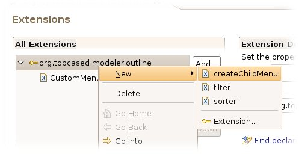

1. Introduction
The document is a user manual that explains the outline generation process : how from an existing meta-model we can generate and customize functionalities for the Topcased graphical editor outline.
- creation of the outline configurator
- generation of the outline customize items
These steps are required to generate customize functions for the Topcased Ecore editor.
2. Configuring the outline
Let us configure a more useful outline to use in the Ecore editor outline. The first step is to create an outline configurator model. The outline configurator model describes
which functionality we want to generate to add to the editor outline. To create a new outline configurator model, "Right Click > New > Other..."
 and then "Topcased > Topcased Configurators > OutlineConfigurator Model".
The root element must be an "Outline Configuration".
When you have finished the wizard, the editor is opened. The outline configurator model only contains the root element "Outline Configuration".
Then you have to reference the XXX.genmodel file. Indeed, the objects we will create will depends on the model objects of the edited meta-model.
So, right click on the editor and select "Load Resource..." and specify the desired *.genmodel file.
and then "Topcased > Topcased Configurators > OutlineConfigurator Model".
The root element must be an "Outline Configuration".
When you have finished the wizard, the editor is opened. The outline configurator model only contains the root element "Outline Configuration".
Then you have to reference the XXX.genmodel file. Indeed, the objects we will create will depends on the model objects of the edited meta-model.
So, right click on the editor and select "Load Resource..." and specify the desired *.genmodel file.
 At this point, we have complete the necessary steps to configure the outline configurator. We advise you to follow the following steps in the right order.
At this point, we have complete the necessary steps to configure the outline configurator. We advise you to follow the following steps in the right order.
2.1. The CreateChildMenuConfiguration
Define the 'Create child' menu that will be generated for the outline and which will be added to the existing outline by extension. Click on the root element (OutlineConfiguration) so you may select "New Child > Create Child Menu Configuration".
Using the properties view fill out the necessary fields:
- ClassName : the name of the Java class representing the generated 'Create child' menu. (ex : EcoreCreateChildMenu)
NB: Open the properties view by selecting the entry "Show Properties" which appears in the context menu.
2.2. The Menu
Add a menu (using the context menu) to the main "Create child" menu. A menu can also contains menus, menu groups and create child actions.
- Id : the unique id of the menu
- Name : the displayed name of the menu (the label).
2.3. The Menu Group
Add a menu group to a menu. This is a reserved place in a menu where menus, and create child actions can be added.
- Id : the unique id of the menu group.
2.4. The Create Child Action
Add a create child action to either a menu or a menu group. A create child action is an action to create a new child in the outline navigator.
- Class : the class representing the type of Child to create
- Type : exact or hierarchical
- exact : will add an action to create a child of the exact given type.
- hierarchical : will add an action for each element which is a subclass of the given type
- Create Child action in the Package Menu: class = EPackage; type = exact
- Create Child action in the Class Menu: class = EClass; type = exact
3. Generate the Outline
Now that the outline configuration is performed, we can generate the outline elements by right clicking on the outline configurator file and select "Topcased > Generation > Outline".
You can now customize the outline using the modeler extension point .
4. Customizing the Outline
4.1 Customize
Open the plugin.xml file generated with the menu project. Click on the extension tab placed at the bottom of the editor view. Now we have to use the extension point . On the extensions editor, click on the add button and select the desired extension point. You can use the extension point filter to optimize your extension point research. Once the extension point is added, create a child menu using the context.  Fill out all the fields. It is recommended to change the default name into a friendly user name. In the editor field, you have to put exactly the same ID declared by the editor featuring this menu.
4.2 Display
To display our customized menu you have to select it. To do that, click on the arrow facing to the buttom in the outline view. Select "Create child menu > 'your customised menu'" And that is it!! Everytime a customize menu is selected, you will notice that all menu entries are grouped by categories just as it is explained above.
By Thomas FRIOL, Alfredo SERRANO, Anyware Technologies
Updated Sept, 13 2006